Holiday Number Two for 2026
This one was booked nice and early. Ferry sorted, caravan booked and the countdown set on my phone — although only from 76 days this time.
As usual, I left the F1 hotel until later. The plan was to catch the early morning ferry from Portsmouth to Ouistreham, then make a decent run south to Poitiers for the first night in a cheap and cheerful F1.
That would leave me with a much more leisurely second day and plenty of time to cover the final stretch to the campsite. Check-in wasn't until 4pm anyway, so there was absolutely no need to rush.
So, Where Was I Going?
Mayotte Vacances, just outside Biscarrosse in the Landes region of south-west France, right on the shore of the enormous Biscarrosse lake.
Biscarrosse had been very much in the news only a few weeks earlier because of the huge wildfire that started on 23rd July.
And when I say huge, I mean huge.
The fire started beside the RD652 and eventually burned through thousands of hectares of forest around Biscarrosse and Parentis-en-Born. Tens of thousands of people were evacuated while firefighters fought to bring it under control.
Riding through the area afterwards really brought home the scale of it. I passed burnt-out commercial buildings, car dealerships and industrial units, although fortunately relatively few houses seemed to have been caught up in what I saw.
At one point I came across a freshly burned stretch beside the D652 and naturally decided that this must have been the exact spot where the fire started.
Do I know that for certain? Absolutely not.
Was it on the right road, in roughly the right area and sufficiently dramatic-looking to make a good story? Definitely.
So until somebody proves otherwise, I’m sticking with it.
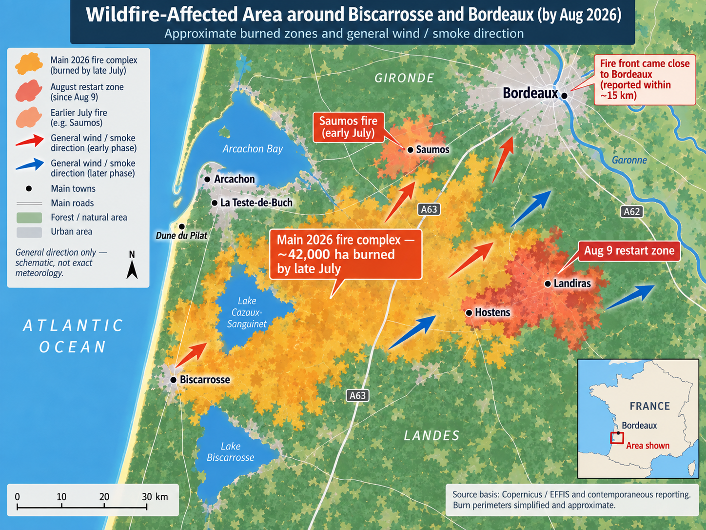
Mayotte Vacances
The campsite itself was really nice and very well laid out.
All six — yes, six — swimming pools were grouped in the centre of the site along with the bar, restaurant, takeaway, ice-cream and crêpe shop, laundry, gym and supermarket.
Pretty much everything you needed was in one central area.
The beer, unfortunately, remained reassuringly French in price.
€8.50 for a large Heineken.
I wasn't going to be having too many of those. I'd stick to my usual one or two a night and preserve the holiday budget for more important things.
Liam had his own caravan on almost the complete opposite side of the campsite.
Probably only a five-minute walk away, but far enough for him to maintain the appropriate level of luxury and independence.
If we were heading out on the bikes, one of us would send a message and we'd meet near reception before setting off.
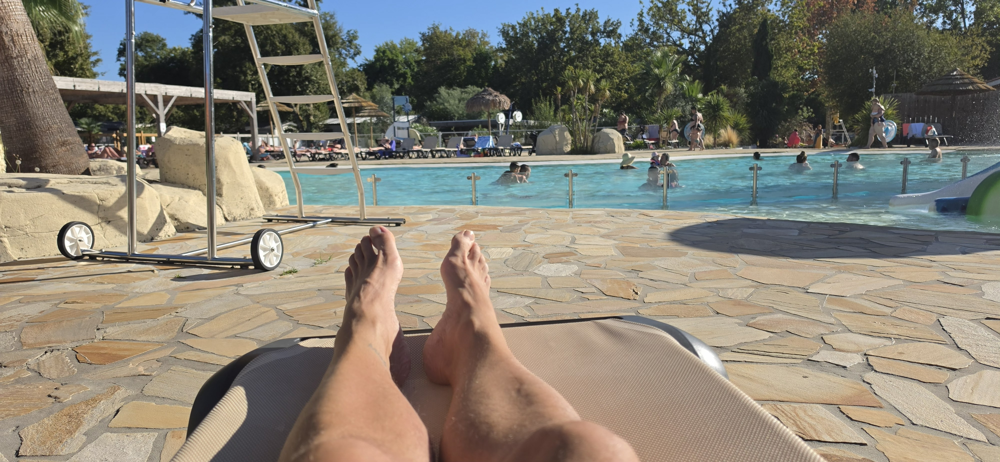
SUP
Stand-Up Paddleboarding
I'd promised myself before the holiday that I was going to give paddleboarding a try.
I'd never done it before, but apparently I took to it like... well, a paddleboarder to water.
Liam and I went along to the hire centre. He hired a kayak and I hired a paddleboard.
The guy running the place was really helpful and gave me what he described as a beginner's board — very stable and, apparently, quite difficult to turn.
That sounded ideal.
He also gave us an extra ten minutes on the hire time because the lake is rather odd near the shore.
For roughly the first 100 metres the water is only about six to twelve inches deep. After that it gradually reaches around three feet for another stretch before suddenly dropping away into properly deep water.
The extra ten minutes allowed us to drag the paddleboard and kayak far enough out for the paddleboard fin to actually clear the bottom.
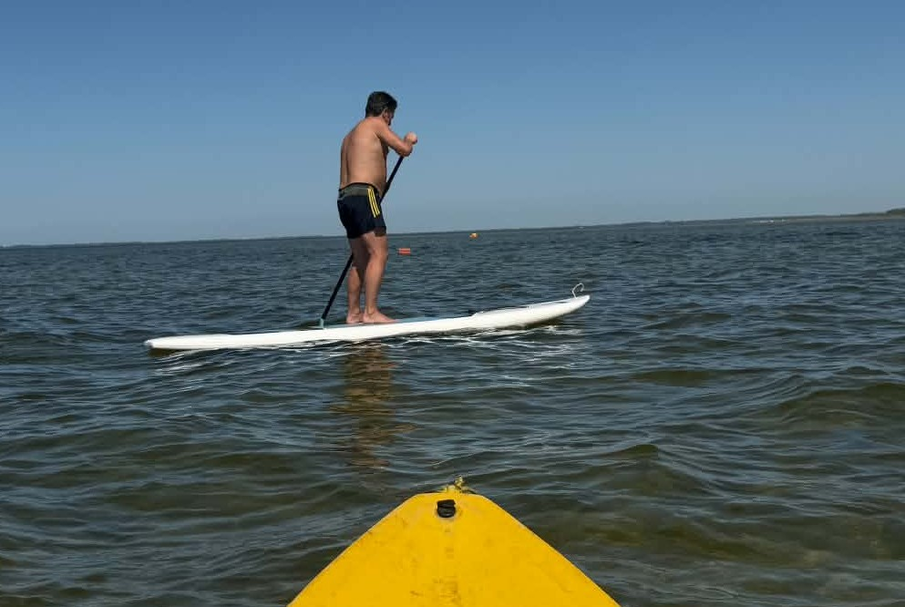
I enjoyed it so much that I booked another session a couple of days later.
This time we ventured further afield.
Liam spent much of the trip circling around me because his kayak was considerably quicker than my rather ponderous paddleboard.
We made as direct a line as I was capable of towards the canal linking the lakes.
It took us nearly half an hour to get there, which meant there wasn't much time to admire it before turning around and heading back, but at least it gave me an idea for an upcoming walk.
On the way we tucked in close to the bank to let the floating Gendarmerie pass us in their inflatable boat before they disappeared off across the lake at considerably greater speed than either of us could manage.
Walking
After canoeing and discovering the canal I though I'd better walk it, just to see where it goes. The largest lake, the most northerly of the three, and the one I'm staying at is called Étang de Cazaux et de Sanguinet Well it goes to the smaller lake in the middle, Petit Étang de Biscarrosse, and then progresses on to the most southernly of the lakes, Lac de Biscarrosse et de Parentis, at Biscarrosse itself.
Total steps for the walk, 24,500 so there and back about 10 miles I guess, not much to see, just a canal, arough path and a cycle path. At the Biscarrosse end though is a flying boat museum, 8euro 50 to get in, so I just took a photo from outside. Apparently the lake used to be used for flying boats.
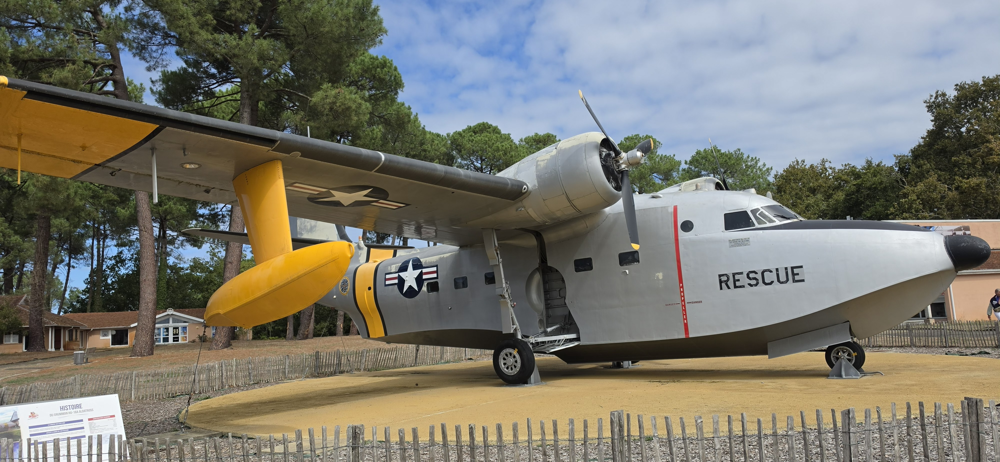
Next walk was to Biscarrosse Plage, a bit more advenurous, at trek across the forest and dunes of 30,000 steps so 13 miles at a guess, what a lovely little town, very geared up to holiday makers, it has a nice shopping, bar, restaurant area, mainly closed off to traffic, I had a Buerno and chocolate 2 ball ice cream in a really nice fancy cone. The seafront is the usual west coast style, sandy beaches as far as the eye can see, big Atlantic waves and loads of surfers.
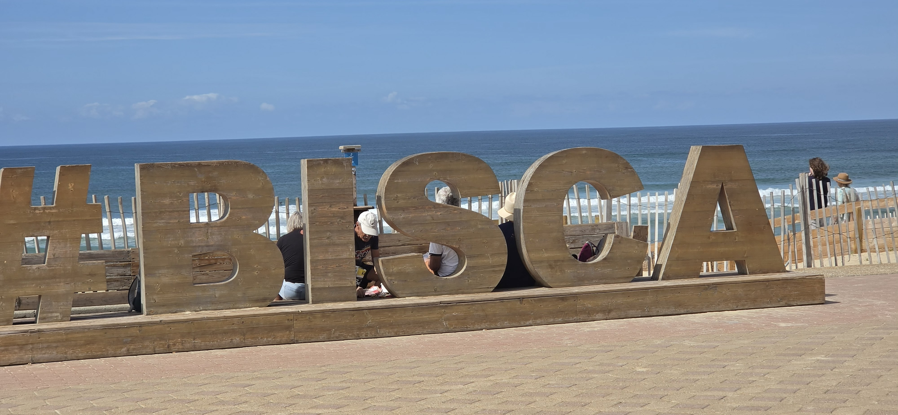
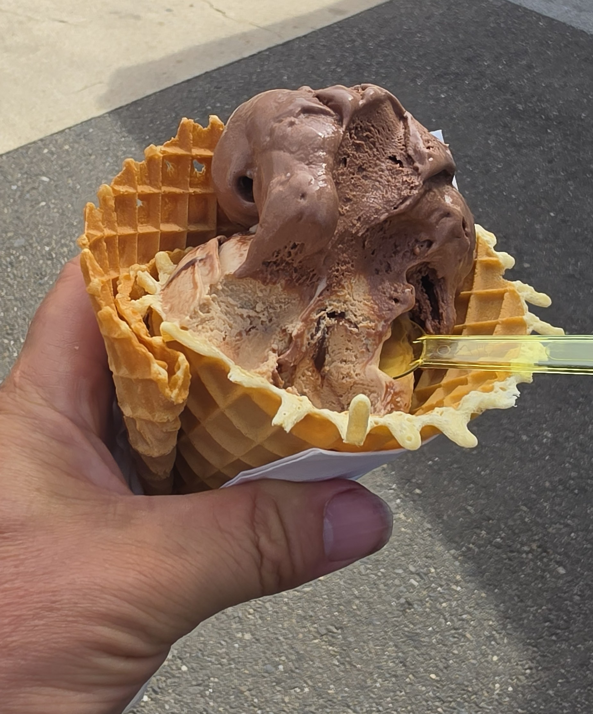
The following day, I headed round the lake to see the water park. I had no intention of going on the floats but was disappointed all the same to find them dismantling it. I then took a detour through the dunes and forest, clocking up ten miles in total. I wish I'd taken a photo of my feet and legs when I got back, they were minging. I had to take a quick shower before settling down by the swimming pool for an hour to relax before my traditional "on holiday" pint of Heineken.
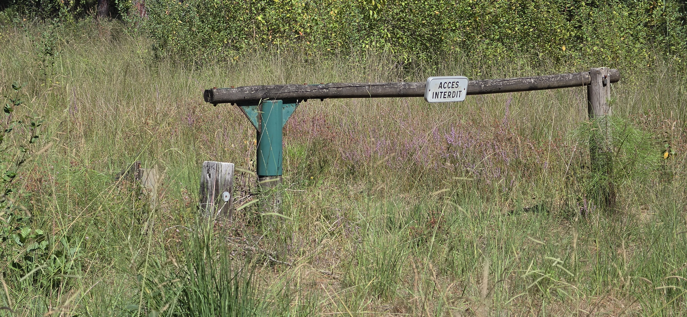
Bordeaux by Train
Rather than ride the bikes all the way into Bordeaux — roughly a 100 km trip — we decided to let the train take the strain.
We rode to the wonderfully named town of Ychoux and caught the 11:42.
And at exactly 11:42, off it went.
Clean carriage, comfortable seats and a really smooth ride all the way into Bordeaux Saint-Jean station.
From there we walked towards the older and more touristy part of the city beside the Garonne.
Bordeaux is a very handsome city. The pale stone buildings and grand classical streets make the wealth of the old port city pretty obvious. Much of the architecture that gives central Bordeaux its distinctive appearance dates from the 18th century, when the city was undergoing enormous growth and redevelopment.
We wandered around for a while, had a look at the riverfront and eventually found the Frog & Rosbif pub.
Frogs and roast beef — the traditional French and British nicknames for one another.
Who said the French don't have a sense of humour?
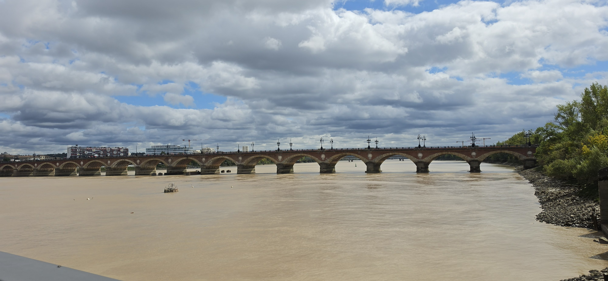
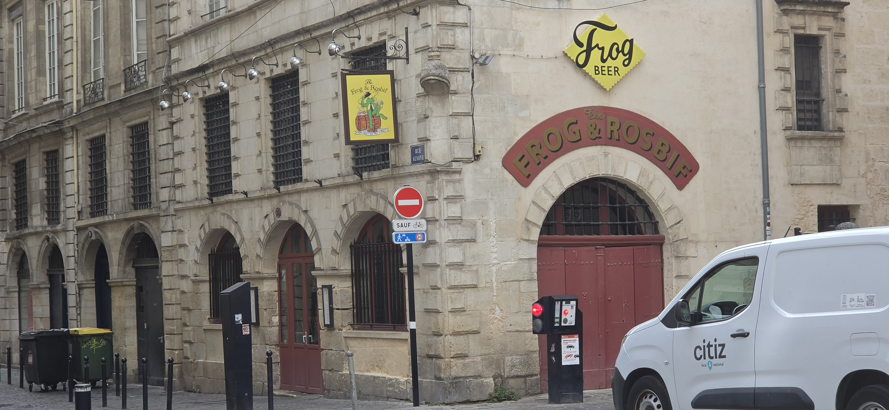
Eventually we caught a tram back towards Saint-Jean station, took the train back to Ychoux and collected the bikes for the short ride back to the campsite.
Another place ticked off — although, as usual, I'm not entirely sure I saw any of the things you're actually supposed to see in Bordeaux.
Dune du Pilat
I had to climb it.
There is a car park with lots of cafes shops and information centers, it went against the grain for me though as I had to pay to park, I usually just drive on by, but this was one of the experiences I want to tick off my list.
So I parked up walked past all the shops, etc. and started the big climb. Unbelievably there are steps almost all the way to the top, I gave them a wide berth, there is also a diagonal path going towards the top, again I chose different. I of course took the direct route, straight up. I had to stop once to let my legs recover, but other than that staight up. It's definately one step forward half a step back.
Once you get to the top though...
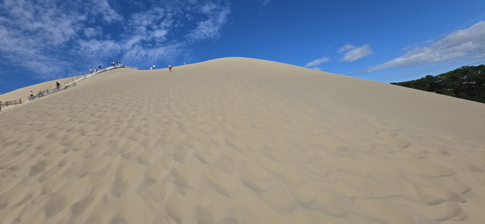
Wow, what a view, the Atlantic Ocean to the west, the bay of Arcachon to the north and the pine forest to the east. I took a few photos, strolled towards the southern end, took some more photos, strolled north again and then headed back down, going down was a lot easier than going up.
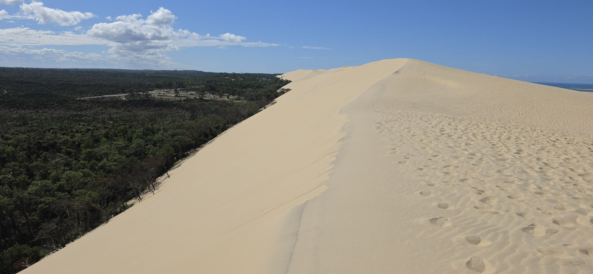
Some quick facts - the Dune du Pilat is the highest dune in Western Europe, standing at 110 meters (361 feet) tall. Although since I emptied out my trainers at the top it now stands at 100 meters and one centimeter. Europes second highest dune is the Big Dipper in our very own Merthyr Mawr, 60 metres tall I think. To put this all into perspective, the worlds tallest dune is the Duna Federico Kirbus in Argentina, which stands at a staggering 1,230 meters tall. So, while the Dune du Pilat may be impressive in its own right, it is still dwarfed by the massive dunes found in other parts of the world. Again, giving that some perspective, Snowdon, Wales' tallest mountain, is only 1,085 meters tall, so the Duna Federico Kirbus is 145 meters taller than Snowdon. I think I'll stick to climbing the Dune du Pilat for now.